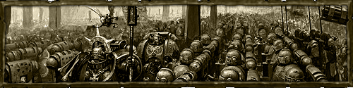
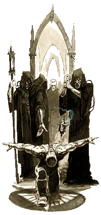
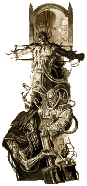
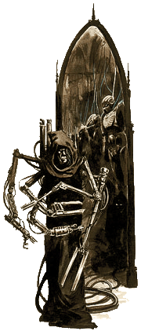
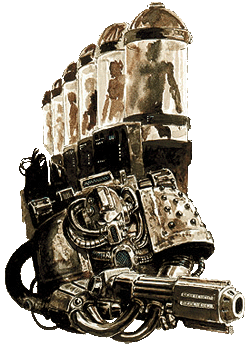
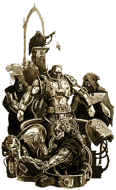

| |
Beavatási rítusok
Avagy az ûrgárdisták
teremtése
Elsõ rész

Az Astartes légióinak eredete
Az Astartes légiói,
avagy az ûrgárdisták, kiemelkedõ fontosságúak
voltak az õsi háborúban, mely ráírta az Impériumot
a galaxis térképére. A Viszály Korának
elmúltával, a hiperûrviharoktól tépázott õsi Föld
– Terra - csupán egy, a külvilágtól elzárt,
független planéta volt. A viharok hirtelen
elmúltával azonban újra lehetõvé vált, hogy
csillaghajók közelítsék meg az eddig elszigetelt
bolygót. Az elkövetkezendõ mindössze kétszáz év
folyamán, a Föld légiói létrehozták a közel a fél
galaxist átölelõ Birodalmat, amely folyamat a
Nagy Keresztes Hadjárat néven vonult be a
történelembe.
A
kutatások és fejlesztések, melyek az ûrgárdisták
megalkotásához vezettek, a harmincadik évezred
alkonyán kezdõdtek meg, közvetlenül a Nagy
Keresztes Hadjáratot megelõzõen. A munka mélyen a
Terra felszíne alatt húzódó laboratóriumokban
zajlott. A kutatás célja egy felsõbbrendû harcos
kaszt megalkotása volt, melynek elsõdleges
ismertetõjegyei a titáni erõ és a megingathatatlan
hûség voltak. Ezen emberfeletti harcosok legelsõ
példányai, elõször Terra visszahódításában
játszottak szerepet, melynek során a Császár
leigázta a Föld uralmáért egymással hadakozó
barbár törzseket. Ezt követõen a hatalmas
Istencsászár létrehozta azt a húsz lényt, akik
késõbb a Primarchák néven váltak ismertté.
Hogy mi volt a Császár eredeti szándéka a
Primarchákkal az nem ismert, ugyanis egy
rendkívül erõs Káosz-örvénynek köszönhetõen a még
csecsemõkorú Primarchák elkerültek a Földrõl és
egy ideig nyomuk veszett a galaxisban. A Császár
géntechnikusai azonban rendületlenül folytatták
tovább kísérleteiket, megteremtve az elsõ igazi
ûrgárdistákat, miközben technikusok egy csoportja
megalkotta az elsõ kezdetleges ûrgárdista
páncélokat és sorozatvetõket.
Évekkel
késõbb a Nagy Keresztes Hadjárat alatt, a Császár
rendre rátalált elveszettnek hitt gyermekeire, a
Primarchákra, akik, köszönhetõen emberfeletti
képességeiknek, kivétel nélkül mind magas
pozíciókat foglaltak el azon világok
hierarchiájában, ahová a Káosz-örvény sodorta
õket. Nem sokkal késõbb kiderült, hogy a
Primarchák génjei rendkívüli gyorsasággal növelik
meg azon szervek fejlõdési idejét, amik az kezdeti
ûrgárdisták létrehozásához szükségesek. Ennek
eredményeképpen jött létre az a történelmi
mérföldkõ, ami késõbb az Elsõ Alapítás
néven vált ismerté. Húsz ûrgárdista rendházat
született meg azokban az idõkben, mindegyik élén
egy-egy Primarchával, kiknek génkódja tovább élt
harcosaikban. Miután az eretnek Horusz nagyúr
fellázadt a Császár ellen, a rendházakat
felosztották több kisebb rendházra, ami késõbb a
Második Alapítás néven vált ismertté. Ezek
a rendházak a mai napig léteznek és egyenként
mintegy ezer ûrgárdistát számlálnak.
A
Génkód és az embriók
Tizenkilencféle
génkód variáció létezik, köszönhetõen a
tizenkilenc új szervnek, amik mûtétileg bele
vannak ültetve az ûrgárdistákba.
A
legtöbb rendház már több ezer éve létezik.
Ezen idõ alatt azonban, néhány rendház
génkódja elkerülhetetlenül mutálódott, amely
természetesen kihatással volt a hozzájuk
tartozó mesterséges szervek természetére is.
Emiatt néhány mesterséges szerv meggyengült
vagy teljesen használhatatlanná vált, míg
másokat teljesen új tulajdonságokkal ruházott
fel az idõ vasfoga. Azonban bármi legyen is a
változás, az eredmény minden esetben érinti az
egész rendházat, mivel az adott rendházban
minden ûrgárdistája ugyanabból a közös
génkódból kapja a szerveit.
A
mutálódott implantátumok mellett, néhány
rendház teljesen elvesztett egy vagy több
mesterséges szervet különféle balesetek
következtében. Manapság, nagyon kevés rendház
birtokolja mind a tizenkilenc eredeti
beültetést, azonban kivétel nélkül mind
magáénak tudhatja a Feketehámot, ami alapvetõ
az ûrgárdista páncél viseléséhez. |
 |
A beültetések
A
Császár szolgálatában lévõ õsi technikusok
tizenkilenc mesterséges szervet hoztak létre.
Mivel e szervek rendkívül bonyolultak, valamint
mivel mind hatással van a másik mûködésére,
bármilyen mutáció az egyik szervben hatással
lehet, és általában van is, a többi szerv
mûködésére. Ennél fogva az implantátumok állandó
vizsgálatot igényelnek. Nagyon sok ûrgárdista
rendszeres korrekciós mûtéteken és speciális
kemoterápiákon kell, hogy átessen, anyagcseréjének
természetes szinten tartása végett. A szerveket
egymás után, fázisokban ültetik be az
ûrgárdistába.
Egyes fázis – A másodlagos szív.
Ez talán a legegyszerûbb és leg magától értetõdõbb
implant. A másodlagos szív képes arra, hogy
megnövelje a vérellátást, illetve, hogy fenntartsa
a vérkeringést, a páciens elsõdleges szívének
megsemmisülése esetén is. Az egyes fázis
eredményeképpen az ûrgárdista képes a túlélésre
rendkívül oxigénszegény környezetben valamint
súlyos sérülések után is.
Kettes fázis – Ossmodula.
Ez a csõszerû implant kis mérete ellenére
rendkívül komplex. Az Ossmodula ellenõrzi a
csontnövekedést és kiválasztott hormonjai
segítségével nagymértékben serkenti annak
folyamatát. Mindemellett, e mesterséges hormonok
elõsegítik az ûrgárdisták étrendjébe kevert
speciális kerámia alapú anyagok beépülését a még
fejlõdõ csontozatba. Két évvel a beültetés után,
az ûrgárdista alapvetõ változásokon esik át:
csontjai rendkívül erõsek lesznek, a mellkasi
részen a bordák összenõnek - egyfajta természetes
páncélt alkotva - mindezen felül pedig az egész
csontváz természetellenesen megnövekszik.
Hármas fázis - Biscopea.
Ez a megközelítõleg gömb alakú és meglehetõsen
kicsi szerv, a mellkasi részbe van beültetve. Az
Ossmodula-hoz hasonlóan az elsõdleges funkciója
ennek is hormonkiválasztás. Hormonjai segítségével
a Biscopea nagymértékben serkenti az
izomnövekedést a test minden pontján.
|
 |
Négyes fázis – Haemastamen.
Ez a meglehetõsen parányi mesterséges szerv a
központi ér falába van beültetve és két fontos
funkciót lát el. Elsõdleges célja, hogy
ellenõrizze, és bizonyos fokig kontrollálja a
kettes és hármas fázis beültetéseit. Ezen
felül, Haemastamen módosítja a páciens vérének
összetevõit is. Ennek következtében az
ûrgárdista vére sokkal hatékonyabb, mint egy
egyszerû emberé, amire egyébként szûksége is
van a rengeteg extra szervhez, amit a testében
hordoz.
Ötös fázis – Larraman szerv.
Ez egy máj alakú, sötét, húsos implant,
megközelítõleg golflabda méretû. A mellkasi
részbe van beültetve, a szív tájékán
elhelyezkedõ komplikált érrendszer közé. A
szerv elsõdleges funkciója a speciális
Larraman sejtek elõállítása és tárolása. Ha a
páciens megsebesül egy ütközet során, ezek a
sejtek automatikusan belépnek a véráramba,
ahol fehérvérsejtekhez kapcsolódva
megközelítik a sebesült részt. Levegõvel
érintkezve, a Larraman sejtek rendkívüli
gyorsasággal hoznak létre egy bõrszerû
védõréteget, amely megállítja a vérzést, és
mindemellett óvja a károsodott felületet.
|
Hatos fázis – Catalepsiai mirigy.
Ez az agyi implant
általában a koponya hátsó részébe van beültetve.
Eme borsónyi szerv hatással van az ûrgárdista
alvási ciklusára és ellenállóvá teszi azt külsõ
behatásokkal szemben. Normális esetben az
ûrgárdista ugyanúgy alszik, mint egy hétköznapi
ember, de különösen zavaró tényezõk következtében,
a Catalepsiai mirigy automatikusan mûködésbe lép.
Segítségével a páciens képes arra, hogy éberen
aludjon, az agy különbözõ részeinek ’kikapcsolása’
által. Ez a mûvelet teljes egészében nem
helyettesíti a normál alvást, de segítségével
jelentõsen megnõ az ûrgárdista túlélési esélye
pihenés közben.
Hetes fázis – Preomnor.
A Preomnor egy nagyméretû
beültetés, amely tökéletesen illeszkedik a
megnövekedett mellkasi részbe. Ez gyakorlatilag
egy elõemésztõ gyomor, amely lehetõvé teszi az
ûrgárdistának, hogy olyan dolgokat is megemésszem,
amelyek amúgy mérgezõek vagy emészthetetlenek
lennének egy hétköznapi ember számára. Valódi
emésztés ugyan itt nem zajlik le, de a Preomnor
különleges mirigyei segítségével semlegesíti az
amúgy káros anyagokat, még azelõtt, hogy azok
belépnének a tényleges emésztõrendszerbe.
Nyolcas fázis – Omophagea.
Ez egy meglehetõsen bonyolult beültetés. Annak
ellenére, hogy a gerincvelõbe van beágyazva, igazi
hatását az agyra fejti ki. Fõ része négy idegi
csatornából áll, melyek összekötik a másodlagos
gyomrot a gerincvelõvel. Az Omophagea arra lett
tervezve, hogy a gyomorba került idegen szövetek
génállományából információkat, emlékeket vagy akár
öröklött képességeket nyerjen ki. Ez a
meglehetõsen egyedi képesség jelentõsen megnöveli
az ûrgárdista túlélési esélyeit bizonyos
esetekben, a páciens ugyanis szó szerint képessé
válik információt kinyerni bármibõl, amit
megeszik. Amint egy lény darabja bekerül az
Omophagea-ba, az ûrgárdista képessé válik kinyerni
bizonyos emlékeket a lenyelt darabkából. E
képesség rendkívül hasznos lehet idegen világokon,
ahol az ûrgárdista nem rendelkezik megfelelõ
háttérismerettel. Az Omophagea jelenléte vezetett
egyébként számos húsevõ és vérivó rituálé
létrejöttéhez, amirõl több rendház is híressé
vált. Számos rendház szintén az Omophagea-nak
köszönheti a nevét, úgy min a Vérivók vagy a
Hússzaggatók rendháza.
Kilences fázis – Többszörös tüdõ.
Ez egy másik nagyméretû implant. A többszörös -
avagy harmadik - tüdõ egy csõszerû szürke szerv,
amelyen a gárdista légzõszervéhez kapcsolódik.
Normál körülmények között az ûrgárdista elsõdleges
tüdejét használja légzésre; mérgezõ, oxigénszegény
vagy szennyezet környezetben azonban azonnal
életbe lép a harmadik tüdõ. Ártó körülmények
között, egy speciális záróizom irányítja át a
belélegzett levegõt a harmadik tüdõbe, így kímélve
meg az ûrgárdista elõdleges tüdejét a
károsodástól. A többszörös tüdõ speciális méreg
semlegesítõ illetve regenerációs képességeinek
köszönhetõen, a páciens képes szabadon lélegezni
akár a legkíméletlenebb körülmények között is.
|
Tízes fázis - Occulobe.
Ez a meztelen csigára hasonlító szerv az
agy közelébe van beültetve. Speciális
hormonokat és stimulánsokat bocsát ki,
amely lehetõvé teszi, hogy az ûrgárdista
szeme pozitívan reagáljon bizonyos optikai
beavatkozásokra. Az Occulobe közvetlenül
tehát nem javítja a látást, de lehetõvé
teszi a technikusoknak, hogy a megfelelõ
beavatkozásokkal elérjék a megfelelõ
hatást. Egy felnõtt ûrgárdista sokkal jobb
látással rendelkezik, mint egy hétköznapi
ember, és rendkívül kevés fénynél is képes
éppen oly élesen látni, mint fényes
nappal.
Tizenegyes fázis – A Lyman
fül. Ez a
beültetés lehetõvé teszi az ûrgárdistának,
hogy tudatosan blokkoljon, illetve
kiszûrjön bizonyos hangokat a
háttérzajból, miközben hallása is
jelentõsen javul. Mindemellett a páciens
teljesen immúnissá válik a szédülésre
illetve émelygésre. A Lyman fül egyébként
teljesen megkülönböztethetetlen egy normál
emberi fültõl.
Tizenkettes fázis – Sus-an hártya.
Ez a kisméretû, gömb alakú implant az agy
felsõ részébe van beültetve, ahol idõvel
tökéletesen összenõ az agyszövettel. A
beültetés azonban teljesen hatástalan
bizonyos kémiai beavatkozások és megfelelõ
tréning nélkül. A megfelelõ gyakorlás
azonban lehetõvé teszi az ûrgárdistának,
hogy a |
 |
|
|
hártya segítségével egy úgynevezett
’felfüggesztett tudati állapotba’ kerüljön. Ez
lehet tudatos döntés eredménye, illetve
öntudatlan reflex súlyos fizikai trauma
hatására. Ebben a felfüggesztett fázisban, a
páciens képes akár hosszú évekig, amúgy
halálos sebesüléseket is, túlélni. Az
ûrgárdista azonban megfelelõ kémiai
beavatkozások nélkül, önerõbõl nem képes
visszanyerni öntudatát. A ma ismert
leghosszabb ilyen állapot, melyet sikeres
újraélesztés követett, a Sötét Angyalok
rendházából való Silas Err testvér 567 éves
kényszerû álma volt (d.321 M.37). |
Tizenhármas fázis – Melanochrome.
Ez egy fekete, gömbölyû beültetés, mely rendkívül
komplett feladatokat lát el. A szerv folyamatosan
ellenõrzi a bõrt ért sugárzás mértékét, és
amennyiben szükséges, megfelelõ mértékben
elsötétíti a bõr felületét, így védve azt a káros
ultraibolya sugárzástól. Ezen felül, kisebb
mértékben ugyan, de más káros sugárzások ellen is
védelmet nyújt. A génkód eltérõ jellege változatos
bõr és hajszínekhez is vezethet különbözõ
rendházakban. Az sem ritka, hogy néhány rendház
összes gárdistája ugyanazzal a bõrszínnel
rendelkezik, mint az Albínó Harcosok osztaga a
Fehér Szellemek rendházában.
Tizennégyes fázis – Oolitikus vese.
Ez a vörösesbarna, szív alakú szerv, az ûrgárdista
keringésrendszerét módosítja, a többi beültetés
rendeltetésszerû mûködését nagymértékben
elõsegítve. Alapjában, az Oolitikus vese rendkívül
hatékonyan és gyorsan szûri a rajta átáramló vért.
Mindezen túl azonban, képes összhangban mûködni a
másodlagos szívvel, egy úgynevezett vészhelyzeti
állapotot hozva létre. Ezen állapot során, az
ûrgárdista önkívületi állapotba esik és vére
emberfeletti gyorsasággal kezd keringeni testében,
hatékonyan tisztítva meg azt a káros anyagoktól. A
szerv segítségével az ûrgárdista képes túlélni még
olyan mennyiségû toxikus mérgezést is, melyet még
a többszörös tüdõ sem lenne képes semlegesíteni.
|
 |
Tizenötös fázis – Neuroglottis.
Ugyan a Preomnor védi az ûrgárdistát a halálos
mérgektõl, a Neuroglottis lehetõvé teszi a szájba
vett tárgyak íz alapján való azonosítását. Az
implant a száj hátsó részébe van beültetve. Rágás
közben, vagy egyszerûen ízek illetve szagok
alapján, az ûrgárdista képes a legtöbb méreg,
kemikália, sõt még bizonyos élõlények különleges
szagának a felismerésére is. Bizonyos határokon
belül a páciens képes nyomon követni élõlényeket
pusztán ízükbõl kiindulva.
Tizenhatos
fázis – Mucranoid. Ez a
kisméretû beültetés az alsó bélrendszerbe van
beültetve, ahol normális esetben az általa
kibocsátott hormonok a vastagbélbe bejutva
elhagyják a testet. Megfelelõ kemoterápiák
segítségével azonban elérhetõ, hogy a hormonok
hatással legyenek az izzadtság mirigyekre. Ennek
hatására a gárdista egy természetes, öntisztító
olajat
izzad, amely
beborítja az egész
testet. E
|
|
|
védõréteg
védelmet nyújt extrém hõmérsékleti
behatásoktól, sõt bizonyos mértékig, még
vákuummal szemben is ellenállóvá teszi a
pácienst. A Mucranoid kemoterápia minden
hosszabb ûrutazás és vákuumban vagy annak
közelében végrehajtott küldetés elõtt
alapértelmezett eljárásnak számít. |
Tizenhetes
fázis – Betcher szerv.
A Betcher szerv voltaképpen két - egymással
megegyezõ - implantációt takar, mely az ûrgárdista
alsó ajkába van beültetve, közvetlenül a
nyálmirigyek mellett. A szerv nagyon hasonló a
mérgezõ állatok méregmirigyéhez, képessé téve az
ûrgárdistát egy speciális toxin kiválasztására és
tárolására. Szembe köpve a méreg megvakítja az
áldozatot, valamint erõsen savas jellegének
köszönhetõen idõvel képes elmarni a legtöbb fémet
is. Ennek segítségével a bebörtönzött gárdista, jó
eséllyel képes – szó szerint - kirágni magát
cellájából, mindössze néhány óra leforgása alatt.
Saját mérgükre az ûrgárdisták természetesen
immúnisak.
Tizennyolcas fázis – A Progenoid mirigyek.
Két ilyen implant van beültetve az ûrgárdistába;
egy a nyakban, a másik pedig mélyen a mellkasban
helyezkedik el. Mindkét beültetés létfontosságú a
rendház túléléséhez. Behelyezés után ugyanis a
Progenoid mirigyek nõni kezdenek és folyamatosan
raktározzák el tulajdonosuk minden egyéb
implantjának genetikai és hormonális kódját. A
nyaki mirigy öt év után éri el a kifejlett
állapotot, míg a mellkasi tíz éven át fejlõdik,
mely idõ leteltével bármikor eltávolíthatóak. A
Progenoid mirigyek gyakorlatilag az egyetlen
forrást képezik, hogy a rendház visszanyerje a
gárdistába ültetett génkódot. Érett állapotban, a
mirigyek tartalmazzák az ûrgárdistába ültetett
minden egyes mesterséges szerv génkódját.
Eltávolítás után a génkódot alapos vizsgálatnak
vetik alá, hogy kiszûrjenek minden lehetséges
mutációt, majd pedig különleges eljárásokkal
konzerválják, mielõtt egy másik ûrgárdistában
felhasználásra nem kerül. Megfelelõ körülmények
között a kiemelt implantációk, korlátlan ideig
megõrizhetõek.
|
Tizenkilences fázis – A Feketehám.
Ez a legutolsó és egyben legegyedibb
implantátuma az ûrgárdistáknak. Behelyezés
elõtt a Feketehám, egyszerû fekete mûanyag
fóliának néz ki. A laboratóriumi tartályokból
való eltávolítás után azonban a lapokat kisebb
részekre vágják és beültetik közvetlenül az
ûrgárdista bõre alá, ahol hamarosan
növekedésnek indul. Néhány órán belül a szövet
megkeményedik és erõteljes idegi rostokat
növeszt, melyek mélyen behatolnak a gárdista
testébe. Néhány hónap alatt a hám teljesen
kifejlõdik, elérve a gárdista létfontosságú
szerveit, és összekapcsolódik a központi
idegrendszerrel. Ezt követõen speciális
nyílásokat és csatlakozókat vágnak a hám
megfelelõ részeibe. Ezeken a kimeneteken
keresztül, az ûrgárdista képes közvetlenül
rácsatlakozni a páncéljára, ahol létfontosságú
rendszereket érhet el, úgymint létfenntartó,
karbantartó vagy ellenõrzési alegységeket. A
Feketehám nélkül, az ûrgárdista páncél
gyakorlatilag teljesen használhatatlan. |
 |
Fordította: Rince
(A fordítás a hivatalos Games Workshop
website, Creation of a Space Marine cikke alapján
készült.)
|
|